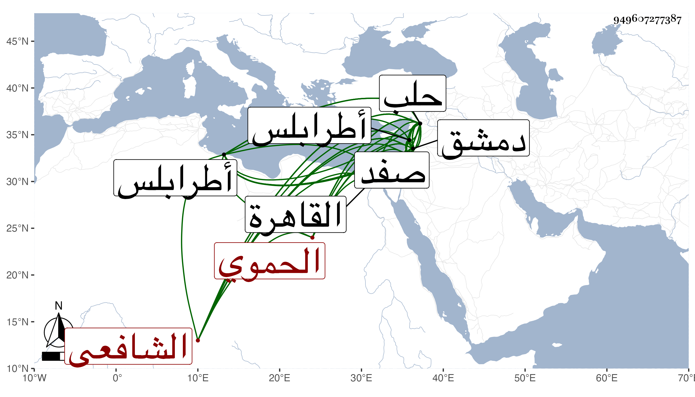

0902Sakhawi.DawLamic.ITO20230111-ara1.EIS1600.949607277387
Biography ID: 949607277387
37
محمد بن محمد بن محمد ناصر الدين أبو عبد الله الحموي الشافعي ابن خطيب نقيرين : قال شيخنا في إنبائه : اشتغل قليلا وترامى على الدخول في المناصب إلى أن ولي قضاء حلب سنة اثنتين وتسعين فباشرها مباشرة غير مرضية فعزل بعد سنة ونصف بالشرف أبي البركات الأنصاري وتوجه إلى القاهرة ليسعى فأعاده الظاهر إلى تغرى بردى نائب حلب فحصلت له محنة وإهانة وحبس بالقلعة ثم أعيد إلى القضاء سنة ست وتسعين عوضا عن الشرف أيضا ولم يلبث أن صرف بعد سنة بالشمس محمد الأخنائي الدمشقي فسافر عنها واستمر يتنقل في البلاد بطالا إلى أن أعيد لقضاء حلب في أول نيابة شيخ بها من قبل الناصر فرج في أواخر دولته ثم عزل بعزل المؤيد ثم عاد بعد قتل الناصر واستقرار شيخ مدبر المملكة للخليفة المستعين ، وفي غضون ذلك ولي قضاء دمشق مرة وطرابلس أخرى ولما قام نوروز بدمشق بعد قتل الناصر قرره فلما قتل نوروز قبض عليه جقمق الدوادار باللجون وحبسه بصفد في سنة ثماني عشرة بإذن المؤيد فلما وصل المؤيد لدمشق في فتنة قانباي أخرج من محبسه ميتا بدسيسة فيما يقال من كاتب السر لكونه كان يعاديه في الأيام الناصرية والنوروزية بحيث كان ابن البارزي يهدده به كل حين وأنكر السلطان موته ونقمه على ابن البارزي وذلك في السنة المذكورة ، وكان كريما سمحا إلا أنه كثير التزوير والتعلق على أملاك الناس ووظائفهم بالتزوير ، ولم يكن مشكور السيرة في الأحكام بحلب سيما في ولايته الأولى . قاله ابن خطيب الناصرية وتبعه شيخنا فقال : كان قليل البضاعة كثير الجرأة كثيرا لبذل والعطاء إلا أنه يتعانى التزوير بالوظائف وبالدور ينتزعها من أهلها بذلك سامحه الله وإيانا .
